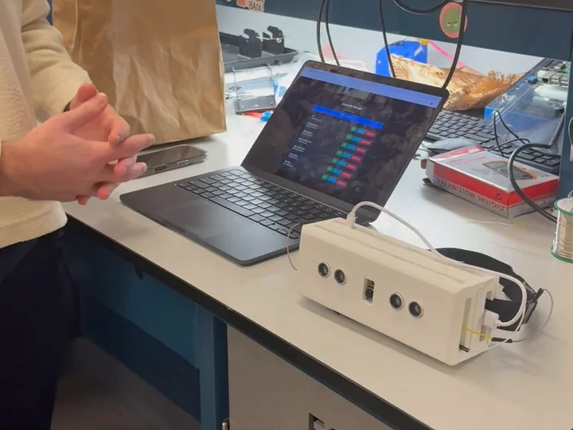

Embedded · Hardware build
NaviGlass: head-worn object alerts on a Raspberry Pi 4
NaviGlass is a prototype head-worn aid for blind and low-vision users, built by our team of four for ESE 1110 at Penn.

A Raspberry Pi 4 runs the YOLO11n object detector on a camera feed, ranges with two ultrasonic sensors, speaks a short description and vibrates on the side the object is on. We demonstrated it in December 2025, built from $83 of listed parts.
The problem
Our four-person ESE 1110 team at Penn set out to build a wearable that tells a blind or low-vision user what is ahead and how close. The proposal faulted existing aids for cost and bulk, so the build used hobby parts.
A camera can name an object but cannot range it, and an ultrasonic sensor does the reverse. Everything had to run on a Raspberry Pi 4 in a head-worn enclosure with no custom PCB.
What we built
Within our team of four, I worked on the electrical and vision components. The camera sends 640 by 480 frames to YOLO11n, exported to NCNN format to run on the Pi's CPU. We pass it 10 classes from the COCO dataset: people, vehicles and street fixtures such as stop signs. A detection must reach 0.70 confidence and cover at least 1/16 of the frame, and the largest box becomes the target.
Two HC-SR04 ultrasonic sensors then range the scene. Each takes three pings 40 ms apart and keeps the median. Readings are valid from 2 to 400 cm, and the nearer one wins.
Six coin vibration motors form left and right groups on two 100 Hz PWM channels. Base duty cycle rises linearly from 20% at 400 cm to 45% at contact, and the detection box's horizontal position shifts it toward one side. The motors run for 3 s on a new object and again whenever it comes 10 cm closer.
Speech comes from the Piper text-to-speech engine's Amy voice over Bluetooth audio. A narrator picks one of 197 sentence templates by distance band and fills in the object, its distance and its side. It speaks once per new object, and an object under 60 cm cuts off the sentence in progress. An earlier version asked Gemini 2.5 Flash for each sentence.
A Flask page on the Pi shows the annotated feed and pairs Bluetooth devices. The SOLIDWORKS enclosure prints in two parts and straps on with an elastic band.
Results
We demonstrated the prototype on video in December 2025. A screenshot of the live view shows two people boxed at 0.78 and 0.92 confidence.
Our parts list totals $83: Pi 4 at $35, camera at $25, two ultrasonic sensors at $10, power bank at $10 and six motors at $3. It omits the enclosure, wiring and Bluetooth speaker.
We did not log frame rate, detection accuracy or latency, and we did not run a trial with a blind or low-vision user.
Limits and next steps
Ranging and vibration start only after the camera finds one of the 10 classes, so a wall or a pole produces no warning. The label and the distance are also not matched: the sensors return the nearest echo, which may not come from the object named.
In the last version of the code, inference runs inside the video stream handler, so detection stops when no browser has the live view open. Power banks also overheated during the build.
The first fix is to range on every loop, then log frame rate and detections on a test walk.
Ask a question about this project
An AI assistant answers from this site's text. It can be wrong; this page is the source.